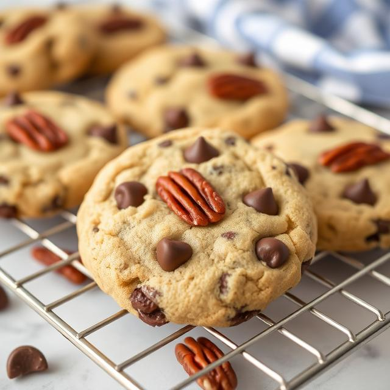

Chocolate Chip Pecan Cookies

Description
These Chocolate Chip Pecan Cookies are rich, nutty, and indulgent, featuring deeply flavorful brown butter, toasted pecans, and semi-sweet chocolate chips.
The recipe begins by browning butter to add a caramelized depth, then balancing any moisture loss with whole milk. Toasted pecans are prepared separately for a crunchy,
roasted bite, and combined with a mix of all-purpose and cake flours for a tender texture. After whipping the brown butter with sugars and vanilla to a creamy base, eggs are incorporated,
followed by dry ingredients and the mix-ins. The dough can be baked immediately or chilled for enhanced flavor and texture, making these cookies both versatile and delicious.
Ingredients
- 240g All Purpose Flour
- 70g Cake Flour
- 10g Baking Soda
- 10g Salt
- 130g Granulated Sugar
- 130g Brown Sugar
- 224g Unsalted Butter, two sticks
- 1 teaspoon Vanilla Extract
- 20-40g Whole Milk
- 2 Large Eggs, room temp
- 175g Pecan Halves
- 225g Semi-Sweet Chocolate Chips
Instructions
- Make Brown Butter
-
Take the two sticks of butter and add them to a pot over medium heat, stir occasionally.
Once the butter has melted it will start to bubble, you can let it continue to bubble. Once
the bubbling has settled down keep stirring to prevent the milk solids in the butter from burning.
Let the butter turn golden to light brown and turn off the heat. Let it cool to room temperature or
you can place the brown butter in a bowl and place in the fridge for an hour or two
- Toast Pecans
-
Melt a couple of tablespoons of butter to a pan over medium heat. Once melted add the pecan halves and toast.
Don't let the pecans sit in the pan for too long as they can burn easily. Stir the pecans every minute until they
have reached a dark brown. Once they are toasted dump on a paper towel lined sheet pan to cool and drain any excess butter.
Once cool you can chop the pecan into chuncks.
- Cream Butter and Sugar
-
Once the brown butter has cooled to room temperature, weigh it to ensure you have 224g, including all the brown bits at the bottom.
If you have less due to evaporation while browning, add enough whole milk to bring the total weight to 224g.
Add the brown butter, granulated sugar, brown sugar, and vanilla to a mixing bowl. Using a stand mixer fitted with the whisk attachment (or a hand mixer),
whip the mixture on medium-high until it becomes fluffy and pale—about three to five minutes.
Add the eggs one at a time, mixing just until incorporated after each addition. Do not overmix.
- Mix In Dry Ingredients
-
In a separate bowl add the all purpose flour, cake flour, salt, and baking soda and mix them together.
If you are using a stand mixer switch out the whisk attachment for the paddle attachment. Add the dry ingredients
in two to three batches until fully incorporated.
- Mix in Chocolate Chips and Pecans
-
You want to mix in the chocolate chips and pecans with a rubber spatula as this will save your mixer and ensures you get
the dough at the bottom of the bowl incorporated as well
- Make the Cookies
-
Portion the cookies as small or big as you like. I like to portion them about 50g. Once you have portioned them
out you can let them sit over night in the refrigerator or you can store them in the freezer for three months.
- Bake the Cookies
-
Preheat oven to 375°F. Bake the cookies for 9-11 minutes or until golden brown on the edges. Let cool on the baking
sheet for a minute before moving to a wire rack to cool completely
- Enjoy!
Home